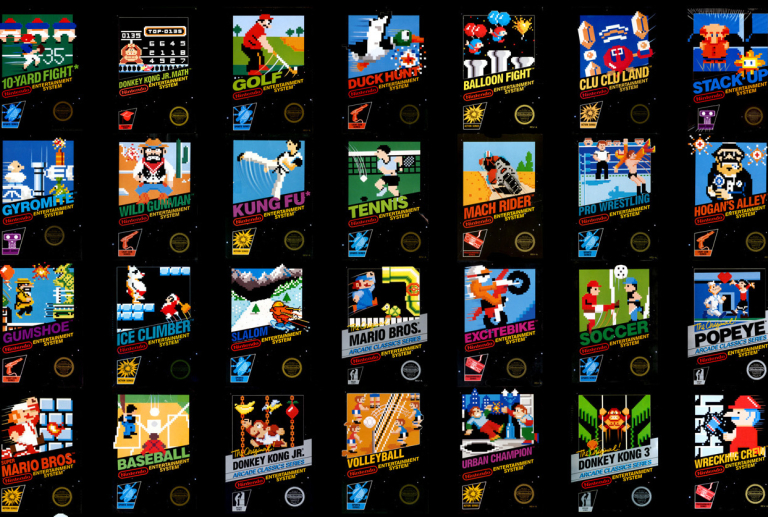

History
Following a series of arcade game successes in the early 1980s, Nintendo made plans to create a cartridge-based console called the Family Computer, or Famicom. Masayuki Uemura (ja) designed the system. Original plans called for an advanced 16-bit system which would function as a full-fledged computer with a keyboard and floppy disk drive, but Nintendo president Hiroshi Yamauchi rejected this and instead decided to go for a cheaper, more conventional cartridge-based game console as he believed that features such as keyboards and disks were intimidating to non-technophiles. A test model was constructed in October 1982 to verify the functionality of the hardware, after which work began on programming tools. Because 65xx CPUs had not been manufactured or sold in Japan up to that time, no cross-development software was available and it had to be produced from scratch. Early Famicom games were written on a system that ran on an NEC PC-8001 computer and LEDs on a grid were used with a digitizer to design graphics as no software design tools for this purpose existed at that time.
Most Popular Games
1. Super Mario Bros.
2. Duck Hunt
3. Super Mario Bros. 3
4. Super Mario Bros. 2
5. The Legend of Zelda
6. Tetris
7. Dr. Mario
8. Zelda II: The Adventure of Link
9. Excitebike
10. Golf

Accessories
The game controller used for both the NES and the Famicom features an oblong brick-like design with a simple
four button layout: two round buttons labeled "A" and "B", a "START" button, and a "SELECT" button.
Additionally, the controllers utilize the cross-shaped joypad, designed by Nintendo employee Gunpei Yokoi
for Nintendo Game & Watch systems, to replace the bulkier joysticks on earlier gaming consoles' controllers.
The original model Famicom features two game controllers, both of which are hardwired to the back of the
console. The second controller lacks the START and SELECT buttons, but features a small microphone. Relatively
few games use this feature. The earliest produced Famicom units have square A and B buttons. This was changed
to the circular designs because of the square buttons being caught in the controller casing when pressed
down and glitches within the hardware causing the system to freeze occasionally while playing a game.
Info from:
https://en.wikipedia.org/wiki/Nintendo_Entertainment_System#History